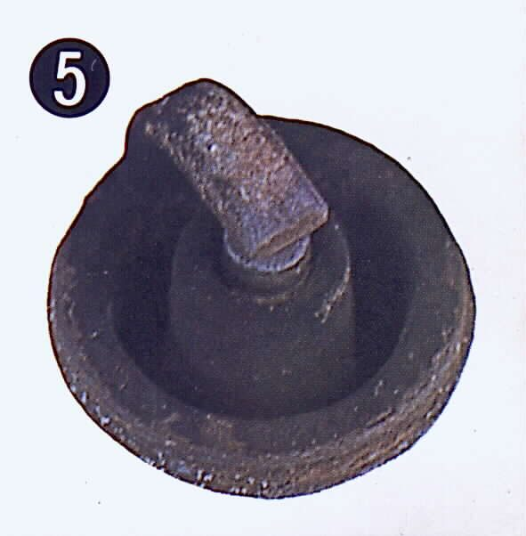

The bike needs filling more often than before. First prove it with a real measurement, because a fuel gauge, a change of route or a different filling level can mislead you. If the bike truly uses more, the K-Light 125 fault chart starts with how it is ridden and loaded, then looks for drag, leaks and a rich mixture.
Is it safe to ride?
Yes. If you smell fuel or see a leak, stop and fix it first: see Fuel is leaking or dripping.
Quick checks first
- Has the riding changed: more traffic, more passengers or cargo, more time in low gears, more short trips?
- Is the fuel grade correct (K-Light 125: unleaded 92 or 95)?
- Are tyre pressures correct?
- Is there any fuel smell or wet patch under the bike?
- Is the choke fully off when warm?
Diagnose it step by step
1Measure it: do a fill-to-fill fuel test over two or three tanks. Is consumption really higher than before for the same riding?
- No: the gauge or the riding changed. If the gauge is the problem, see Fuel gauge reads wrong.
- Yes: go to step 2.
2Is there a leak, a fuel smell, or fuel dripping from the carburettor overflow?
- Yes: Check the fuel tap, lines and flow and see Fuel is leaking or Fuel pours out of the overflow pipe.
- No: go to step 3.
3Do both wheels spin freely, and are tyre pressures correct?
- No: Check for brake drag and tyre pressure. See Bike feels held back.
- Yes: go to step 4.
4Is there black smoke, a sooty plug or a fuel smell from the exhaust?
- Yes: rich mixture. Check the air filter and choke, then see Engine runs rich.
- No: go to step 5.
5Is the idle too high, or do the revs rise without speed (slip)?
- High idle: see Idle speed is too high.
- Slip: see Clutch slips.
- Neither: go to step 6.
6Fuel-injected: is the oxygen sensor tight, and is a code stored?
- The K-Light 125 manual names a loose oxygen sensor as a cause of very high consumption. Check the oxygen sensor and read fault codes.
- Sensor fine: ask a workshop to check the injector for leakage.
7. Carburettor with no smoke: Check the float level. A high float level wastes fuel without much smoke.
Causes, most likely first
| Cause | How to confirm | Fix |
|---|---|---|
| Riding style, load, traffic, low gears | Compare like with like | Change riding, reduce load |
| Low tyre pressure or dragging brake | Gauge, spin test | Tyre pressure |
| Fuel leak | Smell, wet patch | Tap and lines |
| Dirty air filter or choke on (rich) | Black smoke, sooty plug | Air filter |
| High float level or leaking needle | Overflow drips | Float check |
| Clutch slip or high idle | Revs rise without speed | Clutch slips |
| Loose O2 sensor or leaking injector | Workshop live data | O2 check |